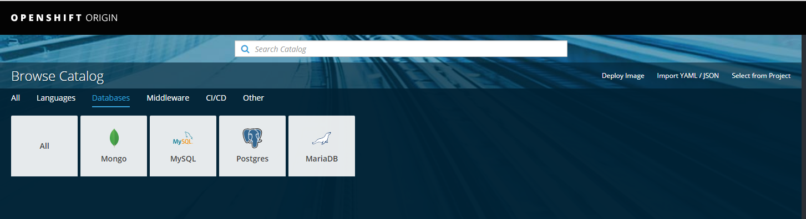
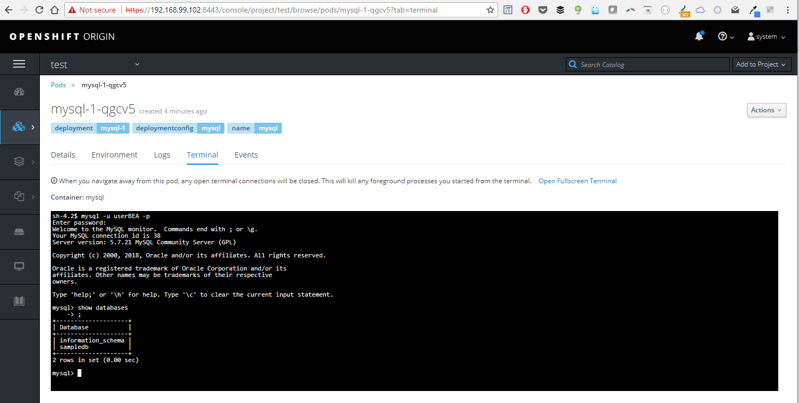

This was first published on https://www.dbi-services.com/blog/openshift-on-my-windows-10-laptop-with-minishift/ (2018-05-31)
Republishing here for new followers. The content is related to the versions available at the publication date.
.
If you want to play with OpenShift on your laptop, you can, in a Virtual Machine. I have VirtualBox installed on my laptop. I’ll install Minishift here, which will create the VM to run OpenShift with few simple commands only. On Linux you can refer to Daniel’s post. Here is the Windows version. Oh, and Daniel did that to run Postgres but my goal is to run an Oracle container of course. Or MySQL maybe.
I’ve downloaded minishift-1.18.0-windows-amd64.zip and unzipped it in D:\Downloads\minishift-1.18.0-windows-amd64 where I have minishift.exe
I configure to use VirtualBox
minishift config set vm-driver virtualbox
It is installed in my Windows profile:
C:\Users\fpa\.minishift
Be careful, minishift do not know that we have multiple drives in Windows. When I was running minishift.exe from the D: disk is was not able to find the virtual machine’s files that were on C:
D:\Downloads\minishift-1.18.0-windows-amd64\minishift-1.18.0-windows-amd64>minishift start
-- Starting profile 'minishift'
-- Checking if https://github.com is reachable ... OK
-- Checking if requested OpenShift version 'v3.9.0' is valid ... OK
-- Checking if requested OpenShift version 'v3.9.0' is supported ... OK
-- Checking if requested hypervisor 'virtualbox' is supported on this platform ... OK
-- Checking if VirtualBox is installed ... OK
-- Checking the ISO URL ... OK
-- Downloading OpenShift binary 'oc' version 'v3.9.0'
40.81 MiB / 40.81 MiB [===================================================================================] 100.00% 0s-- Downloading OpenShift v3.9.0 checksums ... OK
-- Checking if provided oc flags are supported ... OK
-- Starting local OpenShift cluster using 'virtualbox' hypervisor ...
-- Minishift VM will be configured with ...
Memory: 2 GB
vCPUs : 2
Disk size: 20 GB
-- Starting Minishift VM ..... FAIL E0529 17:08:31.056327 1448 start.go:391] Error starting the VM: Error creating the VM. Error creating machine: Error in driver during machine creation: open /Users/fpa/.minishift/cache/iso/b2d/v1.3.0/minishift-b2d.iso: The system cannot find the path specified.. Retrying.
Error starting the VM: Error creating the VM. Error creating machine: Error in driver during machine creation: open /Users/fpa/.minishift/cache/iso/b2d/v1.3.0/minishift-b2d.iso: The system cannot find the path specified.
Then, I changed to the C: drive
D:\Downloads\minishift-1.18.0-windows-amd64\minishift-1.18.0-windows-amd64>C:
C:\Users\fpa>dir \Users\fpa\.minishift\cache\iso\b2d\v1.3.0\
Volume in drive C is OS
Volume Serial Number is 26AE-33F7
Directory of C:\Users\fpa\.minishift\cache\iso\b2d\v1.3.0
29-May-18 15:22 .
29-May-18 15:22 ..
29-May-18 15:22 41,943,040 minishift-b2d.iso
1 File(s) 41,943,040 bytes
2 Dir(s) 30,652,370,944 bytes free
And I run minishift from there:
C:\Users\fpa>D:minishift start
-- Starting profile 'minishift'
-- Checking if https://github.com is reachable ... OK
-- Checking if requested OpenShift version 'v3.9.0' is valid ... OK
-- Checking if requested OpenShift version 'v3.9.0' is supported ... OK
-- Checking if requested hypervisor 'virtualbox' is supported on this platform ... OK
-- Checking if VirtualBox is installed ... OK
-- Checking the ISO URL ... OK
-- Checking if provided oc flags are supported ... OK
-- Starting local OpenShift cluster using 'virtualbox' hypervisor ...
-- Minishift VM will be configured with ...
Memory: 2 GB
vCPUs : 2
Disk size: 20 GB
-- Starting Minishift VM .............................. OK
-- Checking for IP address ... OK
-- Checking for nameservers ... OK
-- Checking if external host is reachable from the Minishift VM ...
Pinging 8.8.8.8 ... OK
-- Checking HTTP connectivity from the VM ...
Retrieving http://minishift.io/index.html ... OK
-- Checking if persistent storage volume is mounted ... OK
-- Checking available disk space ... 0% used OK
Importing 'openshift/origin:v3.9.0' . CACHE MISS
Importing 'openshift/origin-docker-registry:v3.9.0' . CACHE MISS
Importing 'openshift/origin-haproxy-router:v3.9.0' . CACHE MISS
-- OpenShift cluster will be configured with ...
Version: v3.9.0
-- Copying oc binary from the OpenShift container image to VM ...................................... OK
-- Starting OpenShift cluster ........................
Using Docker shared volumes for OpenShift volumes
Using public hostname IP 192.168.99.102 as the host IP
Using 192.168.99.102 as the server IP
Starting OpenShift using openshift/origin:v3.9.0 ...
OpenShift server started.
The server is accessible via web console at:
https://192.168.99.102:8443
You are logged in as:
User: developer
Password:
To login as administrator:
oc login -u system:admin
That’s all. I have a new VM in VirtualBox whith its main files in C:/Users/fpa/.minishift
C:/Users/fpa/.minishift/machines/minishift/boot2docker.iso
C:/Users/fpa/.minishift/machines/minishift/disk.vmdk
The VM boots on the Boot2Docker iso, which is the way to run Docker on Windows without enabling HyperV. The first network interface is NAT for internet access. The second one has a DHCP IP from 192.168.99.1
You can control the VM with minishift (start, stop, configure, ssh,…):
D:\Downloads\minishift-1.18.0-windows-amd64\minishift-1.18.0-windows-amd64>d:minishift ssh
## .
## ## ## ==
## ## ## ## ## ===
/"""""""""""""""""\___/ ===
~~~ {~~ ~~~~ ~~~ ~~~~ ~~~ ~ / ===- ~~~
\______ o __/
\ \ __/
\____\_______/
_ _ ____ _ _
| |__ ___ ___ | |_|___ \ __| | ___ ___| | _____ _ __
| '_ \ / _ \ / _ \| __| __) / _` |/ _ \ / __| |/ / _ \ '__|
| |_) | (_) | (_) | |_ / __/ (_| | (_) | (__| < __/ |
|_.__/ \___/ \___/ \__|_____\__,_|\___/ \___|_|\_\___|_|
Boot2Docker version 1.12.6, build HEAD : 5ab2289 - Wed Jan 11 03:20:40 UTC 2017
Docker version 1.12.6, build 78d1802
We have everything running in containers here:
docker@minishift:/mnt/sda1$ docker ps
CONTAINER ID IMAGE COMMAND CREATED STATUS PORTS NAMES
77c0ef5a80d7 50c7bffa0653 "/usr/bin/openshift-r" 8 minutes ago Up 8 minutes k8s_router_router-1-tsmw7_default_7a1be0e2-635b-11e8-843d-f2c6a11ee2db_1
10fb6a2a6b70 9b472363b07a "/bin/sh -c '/usr/bin" 8 minutes ago Up 8 minutes k8s_registry_docker-registry-1-zfxm5_default_7865ac33-635b-11e8-843d-f2c6a11ee2db_1
2f6b90fb0bb4 openshift/origin-pod:v3.9.0 "/usr/bin/pod" 8 minutes ago Up 8 minutes k8s_POD_router-1-tsmw7_default_7a1be0e2-635b-11e8-843d-f2c6a11ee2db_1
3c720d166989 fae77002371b "/usr/bin/origin-web-" 8 minutes ago Up 8 minutes k8s_webconsole_webconsole-7dfbffd44d-48b9h_openshift-web-console_62b66c66-635b-11e8-843d-f2c6a11ee2db_1
bb5870fc0b7e openshift/origin-pod:v3.9.0 "/usr/bin/pod" 8 minutes ago Up 8 minutes k8s_POD_docker-registry-1-zfxm5_default_7865ac33-635b-11e8-843d-f2c6a11ee2db_1
95663bf29487 openshift/origin-pod:v3.9.0 "/usr/bin/pod" 8 minutes ago Up 8 minutes k8s_POD_webconsole-7dfbffd44d-48b9h_openshift-web-console_62b66c66-635b-11e8-843d-f2c6a11ee2db_1
5fc022dbe112 openshift/origin:v3.9.0 "/usr/bin/openshift s" 8 minutes ago Up 8 minutes origin
But we should not have to connect to this machine.
The minishift executable can be used to control anything. As I have docker client installed on my laptop (the Docker Toolbox) I can get the environment variables:
D:\Downloads\minishift-1.18.0-windows-amd64\minishift-1.18.0-windows-amd64>d:minishift docker-env
SET DOCKER_TLS_VERIFY=1
SET DOCKER_HOST=tcp://192.168.99.102:2376
SET DOCKER_CERT_PATH=C:\Users\fpa\.minishift\certs
REM Run this command to configure your shell:
REM @FOR /f "tokens=*" %i IN ('minishift docker-env') DO @call %i
and see, from Windows, the docker images that are in the VM:
D:\Downloads\minishift-1.18.0-windows-amd64\minishift-1.18.0-windows-amd64>where docker
C:\Program Files\Docker Toolbox\docker.exe
SET DOCKER_TLS_VERIFY=1
SET DOCKER_HOST=tcp://192.168.99.102:2376
SET DOCKER_CERT_PATH=C:\Users\fpa\.minishift\certs
D:\Downloads\minishift-1.18.0-windows-amd64\minishift-1.18.0-windows-amd64>docker images
REPOSITORY TAG IMAGE ID CREATED SIZE
openshift/origin-web-console v3.9.0 fae77002371b 12 days ago 495.1 MB
openshift/origin-docker-registry v3.9.0 9b472363b07a 12 days ago 464.9 MB
openshift/origin-haproxy-router v3.9.0 50c7bffa0653 12 days ago 1.283 GB
openshift/origin-deployer v3.9.0 e4de3cb64af9 12 days ago 1.261 GB
openshift/origin v3.9.0 83ec0170e887 12 days ago 1.261 GB
openshift/origin-pod v3.9.0 b6d2be1df9c0 12 days ago 220.1 MB
While I’m there, I can run whatever I want as a docker container. Let’s try with Oracle.
I need to login to the Docker store (where I have accepted the license conditions)
D:\Downloads\minishift-1.18.0-windows-amd64\minishift-1.18.0-windows-amd64>docker login
Login with your Docker ID to push and pull images from Docker Hub. If you don't have a Docker ID, head over to https://hub.docker.com to create one.
Username: pachot
Password:
Login Succeeded
Let’s pull the Oracle ‘slim’ image:
D:\Downloads\minishift-1.18.0-windows-amd64\minishift-1.18.0-windows-amd64>docker pull store/oracle/database-enterprise:12.2.0.1-slim
12.2.0.1: Pulling from store/oracle/database-enterprise
4ce27fe12c04: Downloading [> ] 1.076 MB/83.31 MB
9d3556e8e792: Downloading [> ] 535.3 kB/151 MB
fc60a1a28025: Download complete
0c32e4ed872e: Download complete
b465d9b6e399: Waiting
And run it:
D:\Downloads\minishift-1.18.0-windows-amd64\minishift-1.18.0-windows-amd64>docker run -it --rm --name orcl store/oracle/database-enterprise:12.2.0.1-slim
Setup Oracle Database
Oracle Database 12.2.0.1 Setup
Wed May 30 20:16:56 UTC 2018
Check parameters ......
log file is : /home/oracle/setup/log/paramChk.log
paramChk.sh is done at 0 sec
untar DB bits ......
log file is : /home/oracle/setup/log/untarDB.log
untarDB.sh is done at 38 sec
...
You may find that funny, but the Oracle images in the Docker store contains only a tarball of Oracle Home and a pre-created database. Just the time to untar those and run the instance and after 2 minutes I have my database ready. All is untar-ed to the volume, including the software.
Here are the ports that are redirected to:
C:\Users\fpa>SET DOCKER_TLS_VERIFY=1
C:\Users\fpa>SET DOCKER_HOST=tcp://192.168.99.102:2376
C:\Users\fpa>SET DOCKER_CERT_PATH=C:\Users\fpa\.minishift\certs
C:\Users\fpa>docker port orcl
1521/tcp -> 0.0.0.0:32771
5500/tcp -> 0.0.0.0:32770
Then, easy to connect with SQL*Net with the credentials provided (see the setup instructions)
C:\Users\fpa>sqlcl sys/Oradoc_db1@//192.168.99.102:32771/orclpdb1.localdomain as sysdba
SQLcl: Release 18.1.1 Production on Wed May 30 22:41:10 2018
Copyright (c) 1982, 2018, Oracle. All rights reserved.
SQL> select instance_name,host_name from v$instance;
INSTANCE_NAME HOST_NAME
------------- ------------
ORCLCDB 254f96463883
So, that’s an easy way to run Oracle on Docker when you have VirtualBox. One download and 5 commands and I’m ready to connect. But that’s not the goal. Here we have OpenShift here to manage multiple Docker containers.
According to the ‘minishift start’ output I have a Web server on https://192.168.99.102:8443 (user: system, password: admin)
It already contains a lot of databases: 
They are really easy to use. In two clicks I’ve run a MySQL container: 
If you don’t like the GUI, there’s the command line interface of OpenShift within the minishift ‘cache:
C:\Users\fpa>C:\Users\fpa\.minishift\cache\oc\v3.9.0\windows\oc.exe login https://192.168.99.102:8443
Authentication required for https://192.168.99.102:8443 (openshift)
Username: system
Password:
Login successful.
You have one project on this server: "test"
Using project "test".
C:\Users\fpa>C:\Users\fpa\.minishift\cache\oc\v3.9.0\windows\oc.exe status
In project test on server https://192.168.99.102:8443
svc/mysql - 172.30.224.246:3306
dc/mysql deploys openshift/mysql:5.7
deployment #1 deployed 7 minutes ago - 1 pod
Now that I have OpenShift running and installed, I’ll be able to run Oracle and manage containers from there. That’s for the next post on this subject.
{kind=link}
{kind=link}